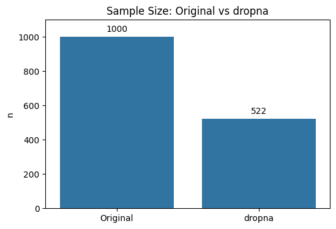
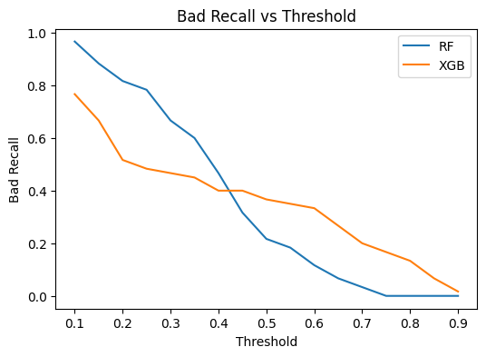
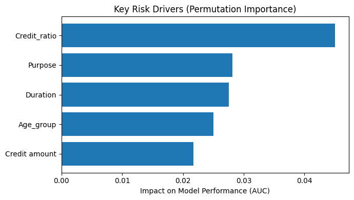
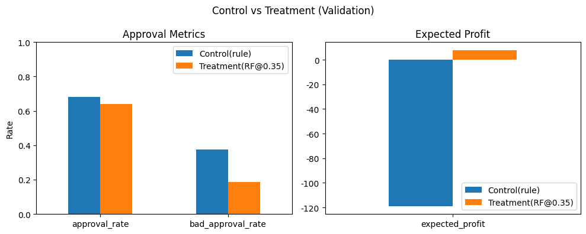

“정확도보다 중요한 건 손익이었다”
신용 승인 정책 고도화: 리스크 예측 모델 & 실험 설계
프로젝트 기간: 2025.01.16 ~ 2026.01.24
신용 승인에서는 Bad(부실) 1건 승인이 여러 건의 Good 수익을 상쇄할 수 있습니다.
그래서 이 프로젝트는 단순 분류 성능이 아니라 손익(Expected Profit) + 운영 제약(승인율 가드레일) 기준으로
“런칭 가능한 컷오프(Threshold)”를 설계하는 데 집중했습니다.
핵심 메시지: 모델은 “정답 맞추기”가 아니라, 운영 가능한 승인/거절 기준을 설계하는 확률 추정기로 사용했습니다.
단순 모델 비교에 머무르지 않고, 실제 운영 전환이 가능한 수준의 정책 후보를 만들기 위해 Control/Treatment 구조와 롤아웃 방식까지 함께 설계했습니다.
1. 문제 정의: “정확도”만으로는 정책을 결정할 수 없다
승인 정책은 단순히 맞춘다/틀린다가 아니라, 승인했을 때의 손익과 운영 제약으로 결정됩니다. 특히 Bad 승인은 손실이 크기 때문에, Accuracy가 높아도 실제 비즈니스 성과가 악화될 수 있습니다.
- 핵심 KPI: Expected Profit
- 운영 제약: 승인율 가드레일(예: 승인율 ≥ 60%)
- 정책 품질 지표: Bad Approval Rate, Bad Recall
2. 데이터 이해: 클래스 불균형 & 리스크 패턴
German Credit(1,000건) 데이터에서 bad 비율은 약 30%였습니다. 또한 일부 변수에 결측이 집중되어 있어 전처리 전략이 정책 품질에 큰 영향을 주었습니다.
핵심 관찰
- 결측: Checking account(39.4%), Saving accounts(18.3%)에 결측이 집중
- Housing: own(자가)은 bad 비율이 낮고, free/rent는 bad 비율이 높음
- Age_group: Student(≤25)에서 bad 비중이 상대적으로 높게 관찰
- 대출 규모/기간: bad가 더 큰 값 분포(금액/기간 리스크 확대 가능성)
결론적으로 “동일한 승인 정책을 모든 고객에 적용하면 안 된다”는 가설이 강화되었고, 세그먼트 기반 차등 승인 전략을 설계할 근거를 확보했습니다.
3. 전처리: dropna가 아닌 ‘구조적 결측 보완’
결측이 집중된 컬럼을 단순 제거(dropna)하면 표본이 크게 감소합니다. 그래서 Age_group × Job × Housing 그룹별 최빈값(mode) 대체 전략을 적용해 데이터 손실을 줄였습니다.

전처리 결과(요약)
- dropna 시 표본: 1000 → 522 (표본 손실 큼)
- 그룹 최빈값 대체: Saving accounts 183→0, Checking account 394→0
- Feature Engineering: Credit_ratio = Credit amount / Duration
결측 삭제보다 데이터 구조를 활용한 결측 보완이 정책 품질을 개선한다.
4. 모델링 & 정책 설계: Threshold로 의사결정 품질을 조정
RandomForest와 XGBoost를 비교했고, 모델 출력 확률(P(bad))을 기반으로 proba ≥ threshold → Reject, proba < threshold → Approve 정책을 정의했습니다.

Threshold는 “거절을 얼마나 할 것인가?”를 조절하는 레버이며, bad recall(리스크 차단)과 승인율(비즈니스)을 트레이드오프 관계로 만듭니다.
모델이 중요하게 본 리스크 요인 (Permutation Importance)
정책을 설계할 때는 성능뿐 아니라 “무엇을 근거로 승인/거절을 판단하는지”가 중요합니다. 런치 후보(RandomForest) 기준으로 Validation 데이터에서 Permutation Importance(AUC)를 계산해 모델이 실제로 성능에 기여한 핵심 변수를 확인했습니다.
결과적으로 모델은 고객 특성보다 상환 부담(대출금액/기간)을 더 중요한 리스크 신호로 사용했습니다. 특히 Credit_ratio(대출금액/기간)가 최상위로 나타나, Feature Engineering이 정책 설계에 유의미하게 기여했음을 확인했습니다.

5. 성능을 KPI로 번역: Expected Profit
정책은 최종적으로 돈으로 평가되어야 하므로 손익을 아래처럼 단순화했습니다.
- 승인 1건당 기대 이익: +1
- 부실 승인 1건당 기대 손실: -5
- Expected Profit = Approved×1 − BadApproved×5
“모델 우열”이 아니라, 손익 구조와 운영 제약(승인율 가드레일)이 최적 정책을 결정합니다. (Hero 슬라이드의 Profit 곡선에서 이 트레이드오프가 가장 명확하게 드러납니다.)
6. 숫자로 증명: Control 대비 Treatment 개선
A/B 테스트 설계를 위해 현행 룰 기반 정책을 Control로 정의하고, Validation 기준(승인율 가드레일 ≥ 60%)에서 최적 조합을 Treatment 후보로 선정했습니다.

- Control (Rule-based): Bad Approval Rate 0.375
- Treatment (RF @ 0.35): Bad Approval Rate 0.1875
- per-1000 impact(VAL): bad 승인 수를 대략 255 → 120(−135) 수준으로 낮추는 방향의 개선
즉, 이 프로젝트의 핵심은 예측 정확도를 높이는 데 있지 않고, 기존 룰 기반 의사결정을 더 나은 정책으로 대체할 수 있는지 비즈니스 KPI 기준으로 검증 가능한 상태까지 만드는 데 있었습니다.
7. 운영 적용: KPI Tree 기반 A/B 테스트 설계(요약)
North Star: Expected Profit
Primary: Bad Approval Rate, Approval Rate
Guardrails: 승인 전환율 급락, 심사 리드타임 증가, CS/컴플레인 증가
- Control(A): 현행(룰 기반) 정책
- Treatment(B): RandomForest + threshold 0.35
- Split: 20% Treatment / 80% Control → 점진 롤아웃(20%→50%→100%)
- 샘플사이즈(근사): 그룹당 623, 총 유입 3115(치료군 20% 가정)